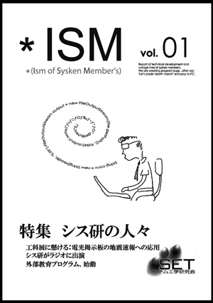

| システム工学研究会会誌 * ISM vol.01 08年春（創刊号） Web版 |
||||
|
*ISM vol.01
*ISM Web版はPDFファイルで公開しています。  ※閲覧できない場合、お使いのパソコンにAdobe Acrobat Readerが入っていない可能性があります。 こちらからご覧ください。
冊子版
Web版は、細部が冊子版と変更になっています。
冊子版は、部室にて購入できます。 contact
連絡は、会長･広報の立松 k06061kk@aitech.ac.jp までお願いします。 |
||||